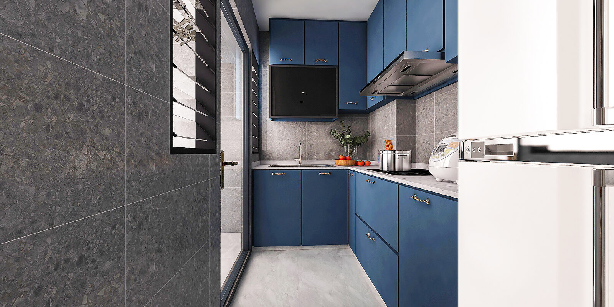

VISUALISATION LIMITS
What a concept can clarify, not prove
Use images to compare design direction and room relationships. They do not prove dimensions, existing conditions, fit or renovation feasibility.

ENQUIRY STATUS · LIVE
Our floor-plan enquiry journey is live. Upload your plan, choose rooms and trades, and request an itemised quote. Floor-plan-to-3D is still in development; concept imagery remains an educational discussion aid, not a construction document.
The six evidence layers behind a responsible concept
These layers answer different questions. Moving to a more polished layer does not repair missing evidence in an earlier one.
- Identified source plan. The exact drawing being used, with its source, flat identity, date or revision if shown, page completeness and readable content recorded. This is evidence of what that document shows, not automatic proof of the flat’s present condition.
- Plan-derived proposal. An early layout proposal based on lines, openings, rooms or scale interpreted from the source, with ambiguity recorded. It is not a measured record and must not fill gaps because a feature seems typical.
- Human-reviewed layout proposal. A person checks and corrects the versioned proposal before it guides later 3D views, layouts, images or fit checks. It remains a correctable proposal, not surveyed, as-built or construction truth.
- Concept imagery. Colours, materials, furniture and viewpoints communicate a possible direction. An image cannot create, change or prove the reviewed layout proposal.
- Measured or observed site evidence. Lawfully obtained measurements, dated observations and appropriate inspections describe particular accessible conditions within their scope.
- Site, as-built, construction and regulatory truth. Verified measurements, records, specifications, current official requirements, approvals and qualified assessments. What is required depends on the proposed work.
For a BTO flat before access, site-dependent questions may have to stay open. For a resale flat, an older drawing and the existing condition may differ. In both cases a tidy concept remains subordinate to better evidence.
What concept visualisation can help you do
- compare broad design directions without treating one as a commitment;
- discuss circulation, storage priorities, furniture zones and relationships between spaces;
- make assumptions and uncertainties visible;
- surface clashes or questions that deserve measurement, records or qualified review;
- decide which choices can remain conceptual and which need later verification;
- revise a brief when household needs or evidence change.
The concept is useful when it makes uncertainty easier to manage, not when it hides uncertainty behind realism.
What it cannot establish
- an as-built record, survey, site inspection or defect diagnosis;
- exact dimensions, scale, dimensional accuracy or the current location of every wall, opening, fixture or service;
- structural condition, or whether a wall may be altered or removed;
- mechanical, electrical, plumbing or other building-services condition or feasibility;
- a construction drawing, technical specification, construction method or constructability;
- accessibility compliance, regulatory compliance, HDB approval or any other authority’s approval;
- exact furniture, appliance or built-in fit;
- installation access, operating clearances or usable tolerances;
- procurement quantities, price, cost, timeline or a guaranteed outcome.
THE ONE RULE
Visual realism is not evidence of any item on that list. The image cannot prove what is hidden, what has changed on site, what an authority will accept, or what a qualified person must assess.
A practical verification checklist
Before relying on any floor-plan concept, write down the answers, or mark them unresolved.
Source and revision
- What exact plan or sheet is being used, where did it come from, and is it the correct flat and revision?
- Are all relevant pages, legends, notes and stated dimensions readable?
- Has the original file been preserved unchanged?
Proposal and uncertainty
- Which parts of the layout are explicitly supported by the source, and which parts are interpretations?
- Who reviewed the layout proposal, which revision guides later layouts, images and fit checks, and what remains uncertain?
- Is concept imagery clearly subordinate to that revision rather than treated as layout evidence?
Dimensions and site checks
- Which dimensions or conditions control the decision?
- What needs lawful site measurement, dated observation, records, inspection or qualified assessment?
- Could finishes, fitted items, obstructions or concealed services affect the answer?
Official and qualified checks
- Which current official requirements or approvals apply to the proposed work?
- Which structural, mechanical, electrical, plumbing, safety, accessibility, defect or construction questions need the appropriate qualified person?
- Has current information been checked for this exact decision rather than assumed from an old summary?
Products, tolerances and access
- Are current product dimensions and required operating clearances available?
- Have tolerances, finished surfaces, door or drawer movement and maintenance access been allowed for?
- Can the item be transported through the actual route and installed using the required access?
Privacy and rights
- Does the plan or supporting material include an address, name, unit information or other personal data?
- Is sharing necessary, authorised and limited to the intended purpose?
- Are the source, retention, access, sharing and deletion arrangements clear before any submission?
Revision when evidence changes
- If site evidence conflicts with the proposal, will the reviewed layout proposal be corrected rather than the evidence ignored?
- Will every later layout, 3D view, render and fit check be reviewed against the new revision?
A five-step order for any future 3D workflow
Address context, then source floor plan, then a human-reviewed layout proposal before any 3D, then design choice, then a separately reviewed itemised quote.
This is the evidence order a future 3D workflow must follow, not a claim that 3D is live today. Address context organises a case but does not prove layout or condition. The exact source plan comes next. Human review and correction must happen before any 3D depends on the layout proposal. Design remains a choice layered over that proposal. The quote is separately reviewed against scope and evidence. It is never generated or authorised by an image.
FREQUENTLY ASKED
On construction readiness, fit and approvals
Is a 3D floor-plan concept construction-ready?
No. It is not an as-built record, survey, construction drawing, technical specification, regulatory approval or instruction to build. Construction decisions need the applicable verified site information, current official checks and qualified work products.
Can concept imagery prove that my furniture will fit?
No. It can help compare a furniture zone, but fit depends on measured finished conditions, current product dimensions, tolerances, operation and installation access. A visually plausible gap is not dimensional proof.
Can it tell me whether a wall can be removed or a service moved?
No. A plan or image cannot establish structure, concealed conditions, or mechanical, electrical and plumbing feasibility. Keep the idea as a question for current official information and the appropriately qualified assessment.
Does a concept show that HDB or another authority will approve the work?
No. Concept visualisation is not a regulatory assessment or approval. Requirements and the evidence needed for a particular proposal must be checked through current official sources and qualified channels.
If the image and reviewed layout proposal disagree, which one controls?
The reviewed layout proposal guides later 3D views, layouts and renders. The image must be corrected or withdrawn; it cannot overwrite the proposal. That proposal still needs the applicable site and approval evidence.
What should happen when site evidence conflicts with the proposal?
Preserve the conflict, verify that the evidence applies to the correct place and decision, and correct the reviewed layout proposal where warranted. Then revisit every later layout, image and fit check. Do not adjust or ignore site evidence to protect an attractive concept.
Is human review the same as an as-built survey?
No. Human review can catch and correct interpretation errors and preserve a traceable revision. It does not convert a source plan into measured site, as-built, construction or regulatory truth.
CONTINUE READING
This guide is educational. It is not construction, structural, mechanical, electrical, plumbing, regulatory or legal advice, and it does not price work. Questions? Contact us.